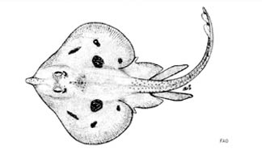
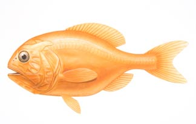
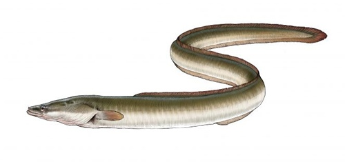
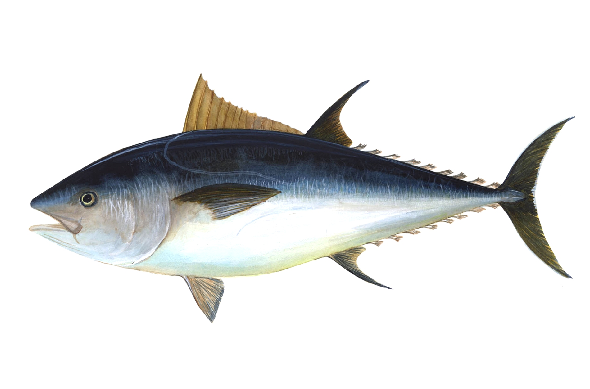

. ↑ .

Мальтийский скат
В течение длительного времени мальтийский скат обитал в Средиземном море у берегов Италии,
Алжира,
Мальты и Туниса. Сегодня его можно найти только в Сицилийском проливе, представляющем собой
канал
между Италией и Тунисом шириной чуть более 140 километров с интенсивным рыболовством. Сокращение
популяции этого вида и неспешность местных властей по его защите привели к тому, что МСОП
присвоил
мальтийскому скату критический уровень угрозы исчезновения.

Оранжевый хоплостет
Известный также как «слизнеголов», оранжевый хоплостет обитает у берегов Новой Зеландии,
Австралии, Намибии и в северо-восточной части Атлантического океана. Его продолжительность жизни
достигает 149 лет, а половая зрелость наступает в возрасте от 20 до 32 лет.
Причиной истребления этого вида является все тот же чрезмерный вылов. Проблема усугубляется еще
тем,
что рыбаки тралят хоплостетов, когда они скапливаются на кормежку и размножение.

Европейский угорь
В течение длительного времени мальтийский скат обитал в Средиземном море у берегов Италии,
Алжира,
Мальты и Туниса. Сегодня его можно найти только в Сицилийском проливе, представляющем собой
канал
между Италией и Тунисом. Рыболовецкие суда редко нацеливаются на вылов мальтийского ската.
Скорее
всего, он становится жертвой побочного вылова. При попадании в сети его, как ненужную добычу,
уже
мертвого или умирающего, выбрасывают обратно в воду.
Сокращение популяции этого вида и неспешность местных властей по его защите привели к тому, что
МСОП
присвоил мальтийскому скату критический уровень угрозы исчезновения.

Голубой тунец
Самым культовым представителем всех видов рыб, которые находятся на грани исчезновения,
является
господствующий на большей части северной Атлантики голубой тунец.
Это одна из самых быстрых морских рыб.
В длину она может достигать трех метров при весе в 630 кг. Репутация этого вида как бойца
сделала
его желанной добычей рыболовов-любителей.
В коммерческом рыболовстве голубой тунец ценится за то, что стоимость одной рыбы может доходить
до $
100 000. Поэтому уровень опасности исчезновения для голубого тунца является критическим.